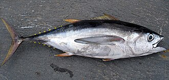

めばち（目撥）の漁獲量 都道府県ランキング
1位から3位までと、とれた量
めばちが日本でいちばん多くとれるのは宮城県です。5,676 tで、全国（2万9,021 t）の20%を占めます。

| 順位 | 都道府県 | 漁獲量 | 全国に占める割合 |
|---|---|---|---|
| 1位 | 宮城県 | 5,676 t | 20% |
| 2位 | 高知県 | 3,650 t | 13% |
| 3位 | 静岡県 | 3,233 t | 11% |
この数字について
- 分類：鮪の仲間
- 全国の漁獲量：2万9,021 t
- この数字が表すもの：漁獲量（海でとった重さ。養殖は含みません）
- 調査：海面漁業生産統計調査（海面漁業） 令和6年
- 21県分を調査（調査していない県は順位に入りません）
めばちの漁獲量について、よくある質問
- めばちの漁獲量が日本一の都道府県はどこですか？
- 宮城県です。海面漁業生産統計調査（海面漁業）（令和6年）で5,676 tでした。
- めばちの漁獲量ランキング2位・3位はどこですか？
- 2位は高知県（3,650 t）、3位は静岡県（3,233 t）です。
- めばちの全国の漁獲量はどれくらいですか？
- 2万9,021 t（令和6年）です。